Diego Riello — Développeur Web Full-Stack Junior
Reconversion professionnelle après 20 ans de management et de création d’entreprise dans la
restauration.
En formation de développement web, j’ai mené deux projets personnels : un CV interactif
et Escape Game l’Apéro Béziers.
Je recherche un stage de 2 mois pour mettre en pratique et renforcer mes acquis
en développement web full stack —
télécharger mon CV (PDF)
.
💡 Astuce : cliquez les zones éclairées (Infos, Diplôme, XP, Stack, Réalisations) pour explorer mon profil.


 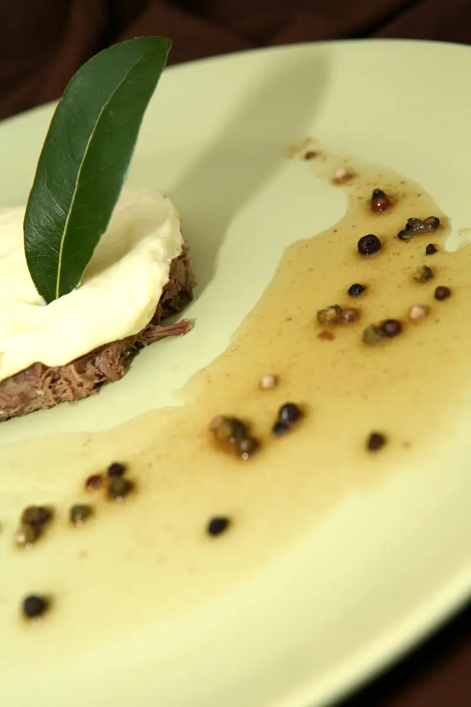
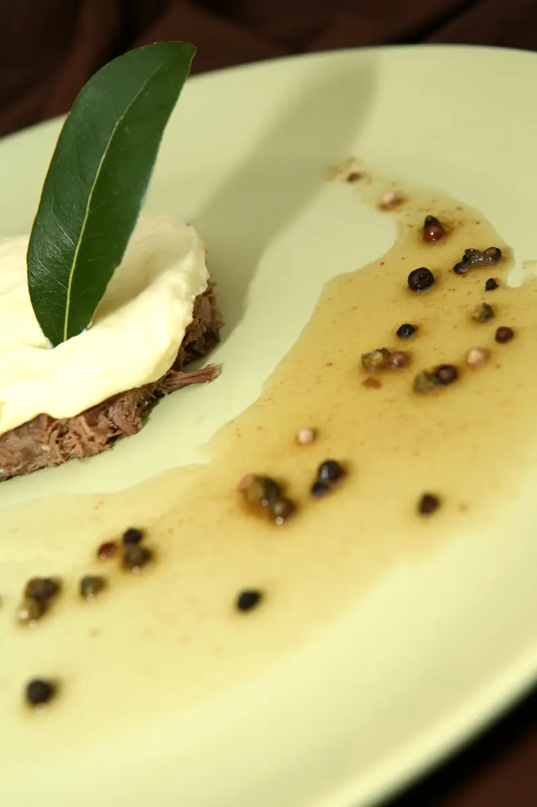
 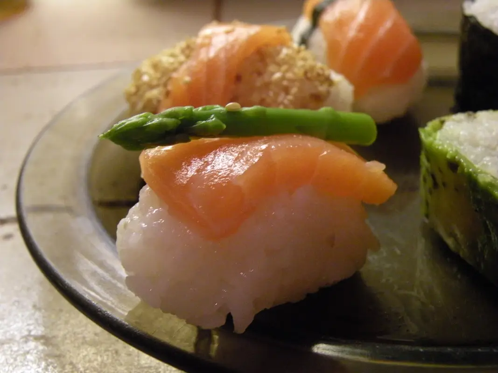
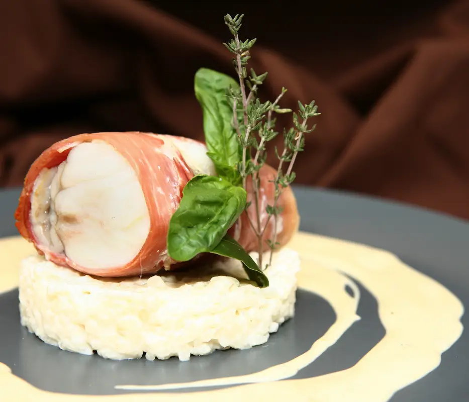
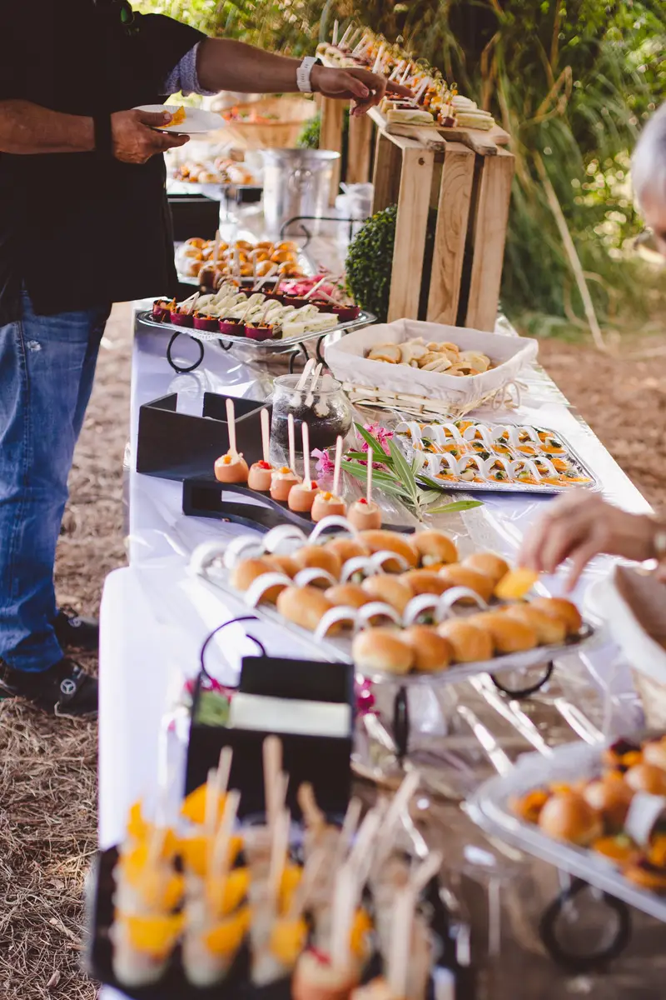
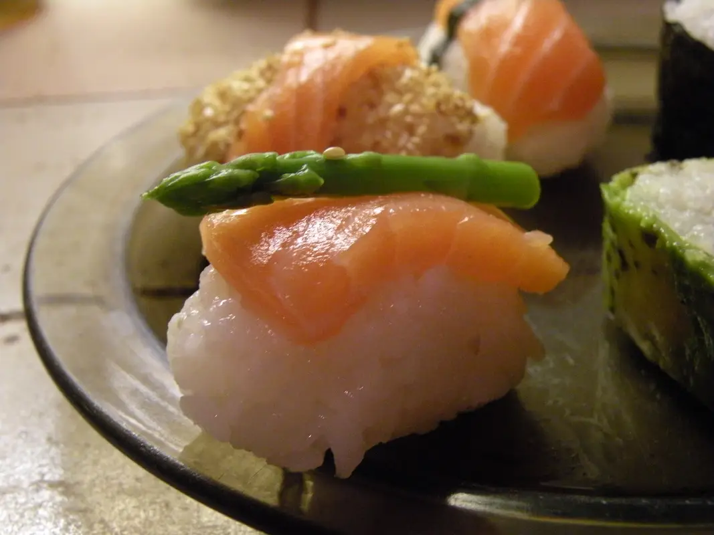
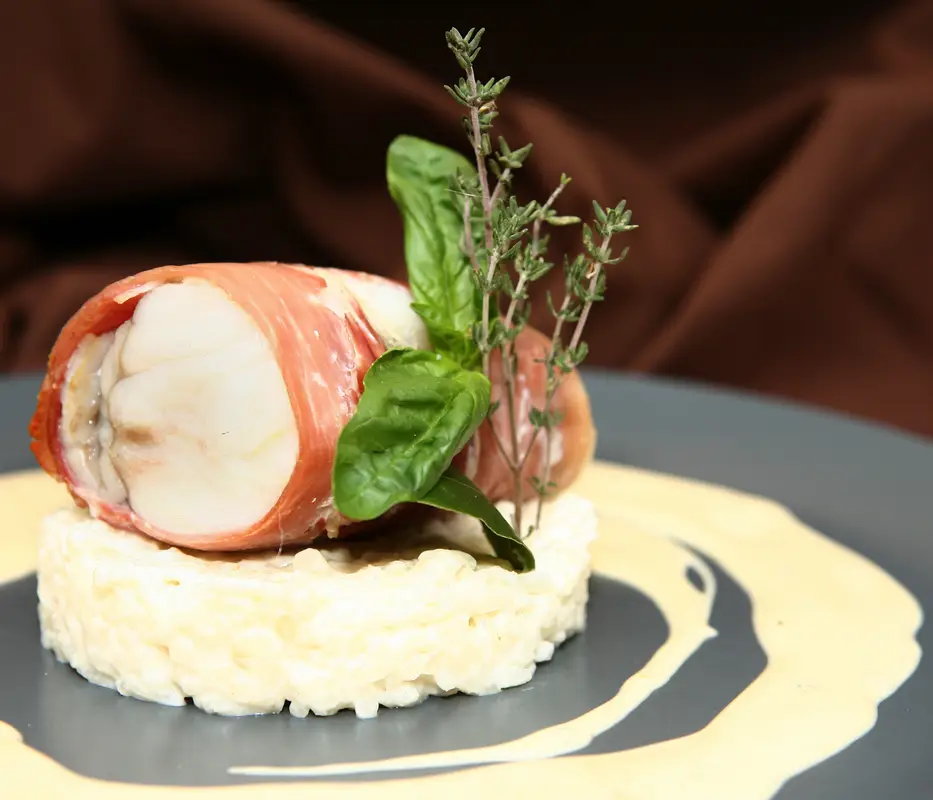
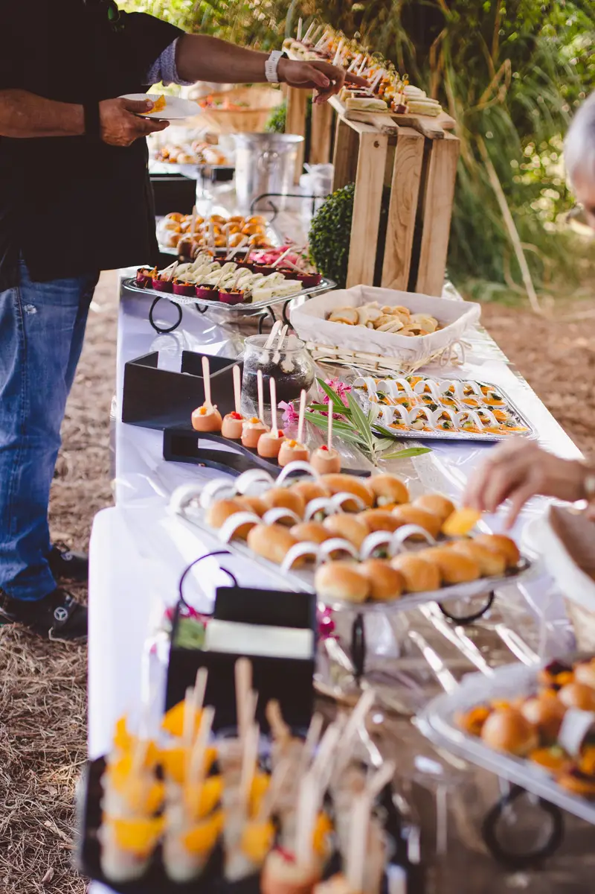
 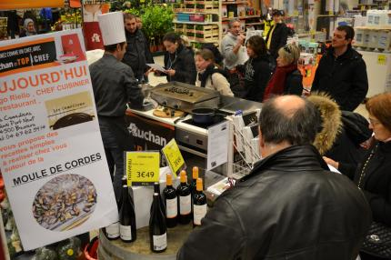
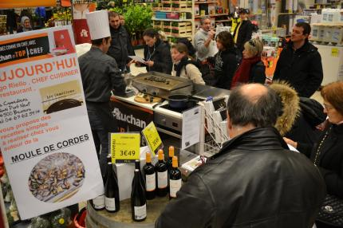

 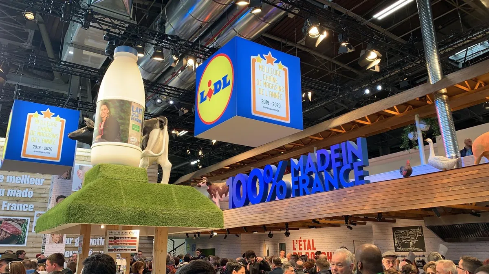
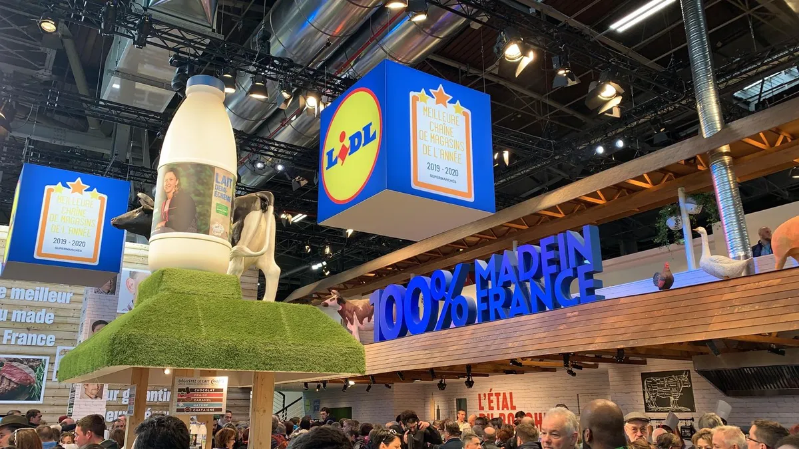